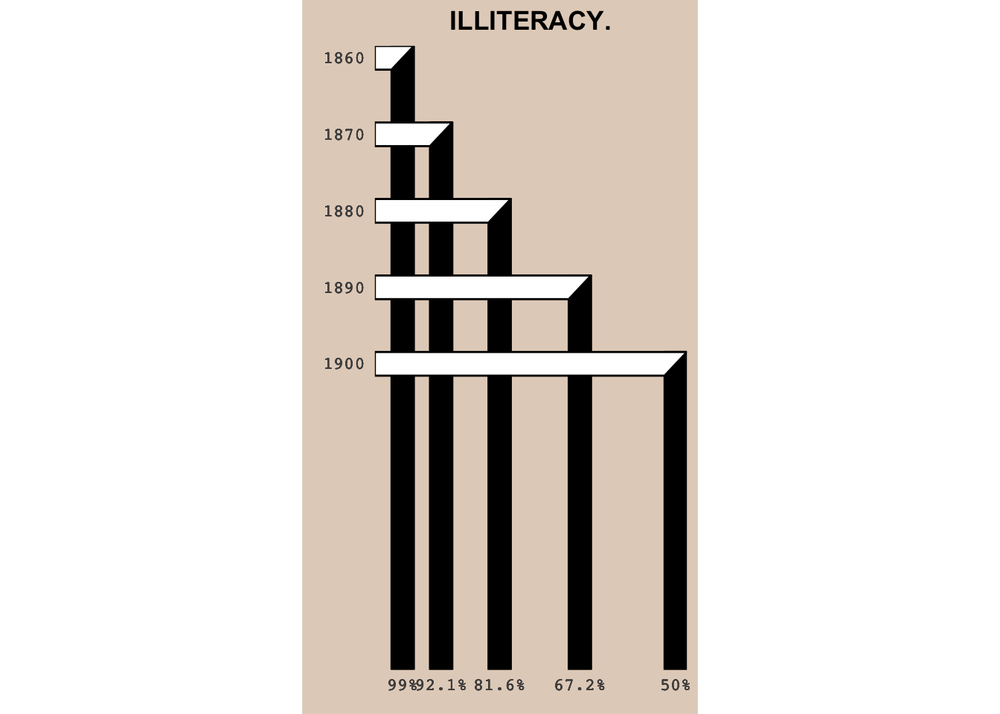
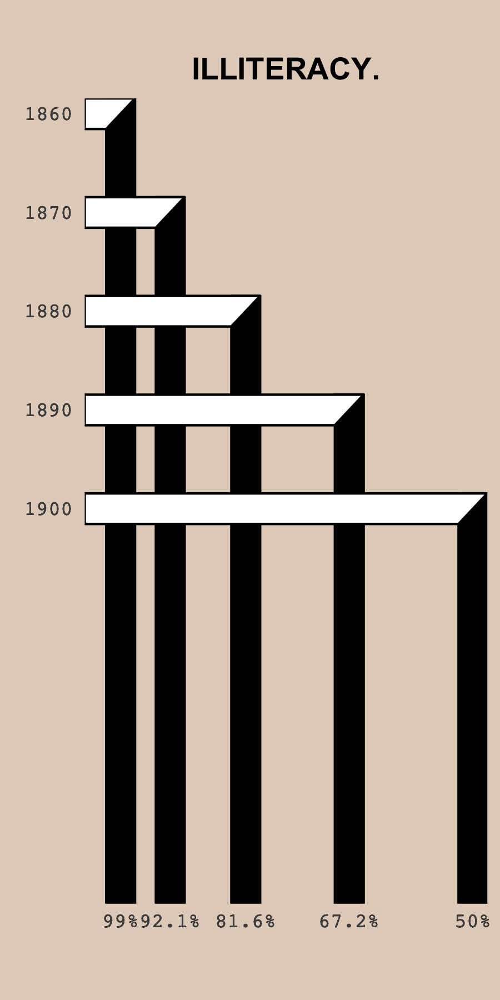

Week 7
Week 7 of 2022 is part of the Du Bois Challenge.
About W.E.B. Du Bois
William Edward Burghardt Du Bois (/djuːˈbɔɪs/ dew-BOYSS;[1][2] February 23, 1868 – August 27, 1963) was an American sociologist, socialist, historian, civil rights activist, Pan-Africanist, author, writer and editor. Born in Great Barrington, Massachusetts, Du Bois grew up in a relatively tolerant and integrated community, and after completing graduate work at the University of Berlin and Harvard, where he was the first African American to earn a doctorate, he became a professor of history, sociology and economics at Atlanta University. Du Bois was one of the founders of the National Association for the Advancement of Colored People (NAACP) in 1909.
Source: Wikipedia
DuBois Challenge
The goal of the challenge is to celebrate the data visualization legacy of W.E.B Du Bois by recreating the visualizations from the 1900 Paris Exposition using modern tools.
I will take on Challenge 06, which is to recreate Plate 14. The target image is shown below:

Data
First load the tidyverse package after installing it if needed.
if(!require("tidyverse")){install.packages("tidyverse")}
library(tidyverse) Load data from the github repo.
# read data
illiteracy <- readr::read_csv('https://raw.githubusercontent.com/ajstarks/dubois-data-portraits/master/challenge/2022/challenge06/data.csv')## Rows: 5 Columns: 2## ── Column specification ─────────────────────────────────────────────────────────────────────────────────────────────────────────────────────────────
## Delimiter: ","
## dbl (2): Date, Iliteracy Rate##
## ℹ Use `spec()` to retrieve the full column specification for this data.
## ℹ Specify the column types or set `show_col_types = FALSE` to quiet this message.Data wrangling
The goal is to re-create the chart using geom_polygon to get the diagonal edge between the horizontal and vertical rectangles. For this, we need to do some data wrangling with the aim of calculating the vertices of the polygons.
# To match the width of the polygons, we need to take the axes ranges of the final
# plot as well as the aspect ratio into account.
# We use these values to calculate how far the polygons should extend beyond the original values.
y_range <- 1940-1858 # values via: range(ggplot_build(p)$layout$panel_scales_y[[1]]$range$range)
x_range <- 101-48 # values via: range(ggplot_build(p)$layout$panel_scales_x[[1]]$range$range)
asp_ratio <- 2
x_extend <- 2
y_extend <- x_extend/x_range * y_range /asp_ratio
illiteracy_long <- illiteracy %>%
rename(IlliteracyRate = `Iliteracy Rate`) %>%
# create long data frame from input data with four entries per year.
slice(rep(1:n(), each=4)) %>%
# add polygon vertices for horizontal and vertical polygons
mutate(date_high_low = rep(rep(c("high", "low"), each = 2), times = 5),
rate_high_low = rep(c("high", "low"), times = 10),
DatePolyVert = case_when(date_high_low == "high" ~ Date - y_extend,
date_high_low == "low" ~ 1940),
DatePolyHori = case_when(date_high_low == "high" ~ Date + y_extend ,
date_high_low == "low" ~ Date - y_extend),
RatePolyHori = case_when(rate_high_low == "high" ~ 104,
rate_high_low == "low" ~ IlliteracyRate - x_extend),
RatePolyVert = case_when(rate_high_low == "high" ~ IlliteracyRate + x_extend,
rate_high_low == "low" ~ IlliteracyRate - x_extend),
RatePolyHori = if_else(date_high_low == "high" & rate_high_low == "low", # to get the diagonal edge
IlliteracyRate + x_extend, RatePolyHori),
index = rep(c(1, 2, 4, 3), times = 5)) %>%
arrange(index)Recreate the plot
p <- ggplot(illiteracy_long, aes(x = RatePolyVert, y = DatePolyVert, group = Date)) +
geom_polygon(fill = "black", color = "black") +
geom_polygon(data = illiteracy_long, aes(x = RatePolyHori, y = DatePolyHori, group = Date),
fill = "white", color = "black") +
scale_y_reverse(breaks = illiteracy_long$Date,
labels = illiteracy_long$Date,
expand = c(0, 0)) +
scale_x_reverse(breaks = illiteracy_long$IlliteracyRate,
labels = sprintf("%s%%", as.character(illiteracy_long$IlliteracyRate)),
expand = c(0, 0)) +
ylab(element_blank()) +
xlab(element_blank()) +
ggtitle("ILLITERACY.")+
theme_minimal() +
theme(aspect.ratio = asp_ratio,
panel.grid.major = element_blank(),
panel.grid.minor = element_blank(),
axis.text = element_text(family = "Courier"),
plot.title = element_text(hjust = 0.5, face = "bold"),
plot.background = element_rect(fill = "#E3D2C4", color = NA))
p
ggsave(filename = here("figures", "bellmund_tidytuesday_2022_wk07.png"), plot = p,
width = 3, height = 6)Here is the final visualization with the correct aspect ratio: 